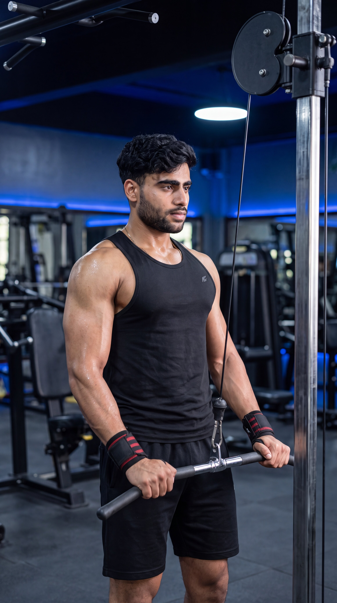

Primary Muscle
Latissimus Dorsi
Isolate Your Lats, Improve Back Engagement & Master Controlled Shoulder Extension
The Straight-Arm Pulldown is a cable isolation exercise that primarily targets the latissimus dorsi while also engaging the teres major, rear deltoids, and core stabilizers. By keeping the elbows nearly straight and pulling the attachment downward through shoulder extension, it helps improve lat engagement, muscular control, mind-muscle connection, and upper-body pulling mechanics.

Latissimus Dorsi
Cable Machine
Beginner
Isolation
Understand which muscles do most of the work during the Straight-Arm Pulldown and which supporting muscles help extend the shoulders, stabilize the upper body, and control the movement throughout each repetition.
Lats
Upper Back
Rear Shoulders
Long Head
Discover how the Straight-Arm Pulldown helps isolate the lats, improve back engagement, strengthen shoulder extension, and build greater muscular control through a focused cable pulling movement.
Targets the lats through shoulder extension while keeping elbow movement minimal, allowing greater focus on the back muscles without relying heavily on the biceps to perform the pulling movement.
The controlled cable path allows you to focus on pulling through the shoulders and driving the attachment toward your thighs, helping develop greater awareness and control of the lat muscles throughout each repetition.
Trains the muscles responsible for bringing the upper arms downward and backward against resistance, helping strengthen the shoulder-extension pattern used in many pulling exercises.
Because the elbows remain nearly fixed throughout the movement, the biceps contribute less than they do during traditional rows and pulldowns, allowing greater emphasis to remain on the lats.
The cable machine maintains resistance throughout the movement, helping you control both the downward pulling phase and the return to the stretched position with deliberate muscular engagement.
Resistance can be increased gradually as your strength, control, and technique improve, providing a measurable progression path for continued lat development and stronger shoulder-extension performance.
Follow these step-by-step instructions to perform the Straight-Arm Pulldown with proper cable setup, stable body positioning, controlled technique, and effective lat engagement.
Set the cable pulley to a high position and attach a straight bar or suitable attachment. Select a manageable resistance that allows you to control the movement through a comfortable range of motion.
Start with lighter resistance than you might use for traditional pulldowns. The goal is to maintain nearly straight arms and create controlled shoulder extension without relying on excessive momentum.
Grip the attachment securely with both hands and step backward until the cable remains under tension. Plant your feet firmly, keep your knees slightly bent, and establish a balanced stance.
Position yourself far enough from the machine to create continuous cable tension, but not so far away that maintaining balance or controlling the attachment becomes difficult.
Hinge slightly forward from your hips, brace your core, maintain a comfortable neutral spine, and keep your chest naturally lifted. Extend your arms forward and upward with a slight, fixed bend in your elbows.
Keep the slight bend in your elbows consistent throughout the exercise. Avoid repeatedly bending and straightening your arms, which can turn the movement into more of a triceps-dominant pressing action.
Keeping your elbows nearly fixed, pull the attachment downward in a controlled arc toward your upper thighs. Focus on driving your upper arms downward through shoulder extension while maintaining a stable torso.
Think about pulling from your armpits rather than pushing the attachment down with your hands. Keep your torso stable and avoid using excessive body movement or momentum to complete the repetition.
Gradually allow the attachment to travel forward and upward as your arms return toward the starting position. Maintain cable tension, keep your elbows nearly fixed, and allow your lats to reach a comfortable stretched position before beginning the next repetition.
Do not let the weight stack pull your arms rapidly upward or your torso forward. Control the entire return phase and maintain consistent body positioning throughout every repetition.
Avoid these common technique errors to improve lat engagement, maintain stable body positioning, and perform the Straight-Arm Pulldown more effectively.
Selecting excessive resistance can make it difficult to maintain stable body positioning, control the attachment path, and keep your elbows nearly fixed throughout each repetition.
Choose a manageable resistance that allows you to maintain a stable torso, slight fixed elbow bend, controlled shoulder extension, and smooth movement through both the pulling and return phases.
Excessively bending and straightening the elbows can turn the exercise into more of a traditional pulldown or pressing movement, reducing the intended emphasis on controlled shoulder extension and lat engagement.
Maintain a slight, comfortable bend in your elbows and keep that angle nearly fixed throughout the movement. Focus on moving your upper arms downward through shoulder extension rather than repeatedly flexing and extending your elbows.
Rocking the torso forward and backward or changing your body angle excessively can introduce momentum, reduce movement control, and make it harder to maintain consistent tension on the intended back muscles.
Brace your core, maintain a slight forward torso lean, and keep your body position stable throughout both the downward pulling and controlled return phases of every repetition.
Jerking the attachment downward or allowing the weight stack to pull your arms rapidly upward can reduce muscular control and make it harder to maintain consistent tension on the lats throughout the exercise.
Perform each repetition with a smooth downward pull and controlled return phase. Reduce the resistance if you need to jerk the attachment, swing your torso, or lose control of the cable to complete the movement.
Apply these practical coaching cues to improve your Straight-Arm Pulldown technique, increase lat engagement, maintain stable body positioning, and perform each repetition with greater control and consistency.
Focus on driving your upper arms downward toward your sides as you pull the attachment toward your thighs rather than simply pushing the weight with your hands.
Think about pulling from your armpits and bringing your upper arms toward your torso. This cue can help you focus on the lats throughout the downward pulling phase.
Maintain a comfortable slight bend in your elbows and keep that angle nearly unchanged throughout each repetition instead of repeatedly bending and straightening your arms.
Your shoulders should create the primary movement while your elbows remain nearly fixed. Excessive elbow bending can shift the exercise away from its intended shoulder-extension pattern.
Allow the attachment to travel forward and upward gradually while maintaining cable tension, stable body positioning, and a slight fixed bend in your elbows.
Do not let the weight stack pull your arms rapidly upward or your torso forward. Control the return until your lats reach a comfortable stretched position before beginning the next repetition.
Increase the resistance only when you can maintain a stable torso, nearly fixed elbow position, controlled attachment path, comfortable range of motion, and smooth repetitions from start to finish.
Heavier resistance should not require excessive torso swinging, shortened repetitions, excessive elbow bending, or jerking the attachment downward. Progress gradually while keeping every repetition controlled and consistent.
Progress from learning the Straight-Arm Pulldown with manageable resistance to stronger, more challenging variations while maintaining stable body positioning, a slight fixed elbow bend, controlled cable tension, effective lat engagement, and consistent technique.
Start with a manageable resistance that allows you to learn proper cable setup, stance, grip position, torso alignment, slight fixed elbow bend, attachment path, and controlled shoulder-extension technique without relying on excessive momentum.
Secure cable setup, balanced foot positioning, comfortable grip, stable torso, slightly bent elbows, controlled attachment path, comfortable range of motion, and smooth repetitions.
Develop consistent repetitions by maintaining a stable torso, keeping a slight fixed bend in your elbows, driving your upper arms downward, pulling the attachment toward your thighs, and controlling the return until your lats reach a comfortable stretched position.
Stable body positioning, consistent elbow angle, effective lat engagement, controlled downward pull, smooth return phase, comfortable stretch, and repetitions without excessive swinging or jerking.
Once you can perform consistent Straight-Arm Pulldown repetitions with reliable technique, gradually increase the resistance while preserving your stable torso, slight fixed elbow bend, controlled attachment path, comfortable range of motion, and overall movement quality.
Progressive resistance increases, consistent technique, controlled tempo, strong lat engagement, full comfortable range of motion, and maintaining stable body positioning as fatigue develops.
After mastering the standard Straight-Arm Pulldown, explore suitable attachment options, controlled tempo variations, paused repetitions, and other appropriate pulldown variations to introduce new challenges according to your training goals and experience.
Intentional exercise variation, appropriate resistance selection, controlled technique, consistent range of motion, stable body positioning, effective lat engagement, and choosing variations that match your individual goals and experience.
Find clear answers to common questions about Straight-Arm Pulldown technique, muscles worked, grip position, attachment path, elbow positioning, training volume, and exercise progression.
The Straight-Arm Pulldown primarily targets the latissimus dorsi through shoulder extension. The teres major and posterior deltoids also assist the movement, while the triceps, core, and surrounding stabilizers help maintain arm position and controlled body alignment throughout each repetition.
A straight bar or rope attachment is commonly used for the Straight-Arm Pulldown. A straight bar provides a fixed hand position, while a rope may allow greater freedom of movement near the bottom of the repetition. Choose an attachment that feels comfortable and allows you to maintain controlled technique and effective lat engagement.
Pull the attachment downward in a controlled arc toward your thighs while driving your upper arms toward your sides. Keep the attachment relatively close to your body at the bottom without forcing an excessive range of motion or allowing your shoulders to roll forward.
Keep a slight, comfortable bend in your elbows rather than locking your arms completely straight. Try to maintain approximately the same elbow angle throughout the repetition so the movement comes primarily from shoulder extension rather than repeatedly bending and straightening the elbows.
Yes. The Straight-Arm Pulldown can be suitable for many beginners because cable resistance can be adjusted according to individual strength and experience. Beginners should start with manageable resistance and focus on stable body positioning, a slight fixed elbow bend, controlled attachment path, effective lat engagement, and smooth repetitions.
The appropriate number of sets and repetitions depends on your training experience, goals, recovery, and overall program. For general muscle development, a common starting point is approximately 2–4 working sets of 10–15 controlled repetitions using resistance that allows you to maintain stable body positioning, a slight fixed elbow bend, controlled cable tension, comfortable range of motion, and consistent technique throughout each set.
Explore other back exercises that complement the Straight-Arm Pulldown and help you develop lat strength, back width, pulling performance, and balanced muscular development through different movement patterns and resistance methods.


Continue building your back strength and training knowledge with step-by-step exercise guides covering proper technique, muscles worked, common mistakes, coaching tips, and progression strategies.